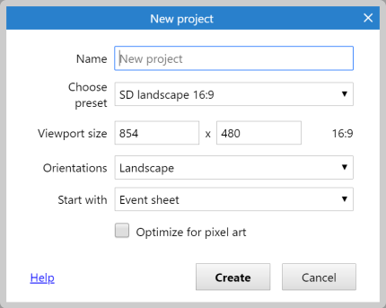
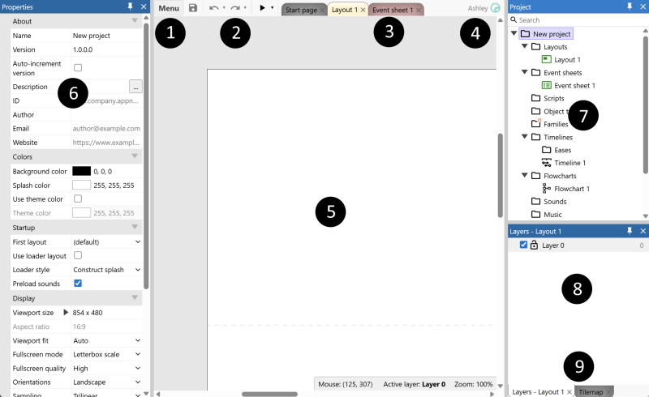
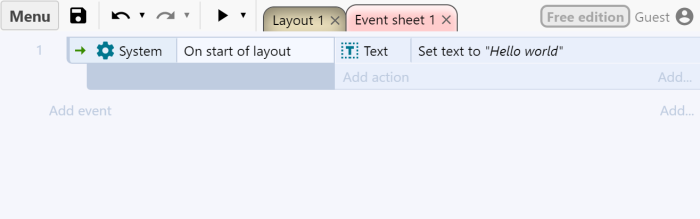

01
It happens 60 times a second.
Why: “Every tick” is true on every frame, about 60 times a second.
Fix: Use a trigger that happens once, like On collision, On clicked or On created. Or add System ▸ Trigger once while true.
SEE IT / DO IT YOURSELF
Find the layout, add two objects and make a click change a line of text. Work in Construct 3 in your browser.
Real screenshots from the official documentation. The images show the providers' example projects; your project names and content will differ. Open the tool alongside this guide.
One step at a time. Keep the real tool open beside this guide.
Alinta’s 5 templates → 12 mistakes everyone makes ↓ 12 clever tricks ↓ Stuck? Where to get help ↓
STEP 01
Open the real Construct editor ↗
On the start page, choose New project. Enter a name you will remember and confirm the dialog. Keep the default settings for this exercise.

Check your screen: Layout 1 and Event sheet 1 are available. The large middle area is where you place objects.
STEP 02

Check your screen: Find Layout 1, switch to Event sheet 1, then return to Layout 1.
STEP 03

Check your screen: One Text object and one Button appear in your layout.
STEP 04
"Here, we share memories instead of money.". Confirm the dialog.
Check your screen: Your row connects Button / On clicked to Text / Set text.
STEP 05

.c3p project file in a folder you can find again.Check your screen: A click produces a visible change and your project is saved. Reopen the saved project to check you kept the right version.
Official saving instructions ↗. Downloads usually go to your Downloads folder unless your browser asks for a location.
Use a detail from your own life and imagine how it could change. This is a small interaction exercise; continue to follow the requirements of your current assignment.
CONSTRUCT / EVERYONE DOES THESE
Not stupid, just human. Every Construct maker has hit all of these. Find your symptom, then read why and how to fix it.
01
Why: “Every tick” is true on every frame, about 60 times a second.
Fix: Use a trigger that happens once, like On collision, On clicked or On created. Or add System ▸ Trigger once while true.
02
Why: The object exists in the project, but there is no copy of it in the layout.
Fix: Drag the object from the Project Bar into the layout. Actions only affect objects that are actually there.
03
Why: The layout is using a different event sheet.
Fix: Click empty space in the layout. In Properties, set Event sheet to the sheet you are editing.
04
Why: The floor has no Solid behaviour, so Platform movement ignores it.
Fix: Select the floor ▸ Behaviors ▸ Add ▸ Solid.
05
Why: The origin point or the collision polygon is in the wrong place.
Fix: Open the Animations editor. Put the origin at the feet and check the collision polygon hugs the character.
06
Why: Nothing picked which enemy, so the action hits all of them.
Fix: Put a condition before the action that picks one, like Enemy ▸ On collision with Bullet.
07
Why: It is set to 0 in an event that runs all the time, or it is an instance variable on one object.
Fix: Use a global variable for score and only reset it in On start of layout.
08
Why: The HUD is on a layer that moves with the camera.
Fix: Put the HUD on its own layer and set that layer’s Parallax to 0, 0.
09
Why: Events run from top to bottom, every tick. A later event can undo an earlier one.
Fix: Read your sheet from the top, like the computer does. Move, merge or add a condition so only one wins.
10
Why: The browser blocked the preview window as a pop-up.
Fix: Allow pop-ups for editor.construct.net (look for the blocked-window icon in the address bar).
11
Why: It only lived in the browser’s storage, which can be cleared.
Fix: Menu ▸ Project ▸ Save as ▸ Download a copy. Keep the .c3p file in your project folder, and save often.
12
Why: JavaScript names are case-sensitive and must match the object name exactly.
Fix: runtime.objects.Text is not runtime.objects.text. Check the name in the Project Bar.
Not on the list? Screenshot your event sheet and send it to AI, or search with the image. See When you are unsure.
CONSTRUCT / LOOK LIKE A PRO
Small moves that make a project feel finished. Most are one behaviour or one action. Try one per lab.
01
What it does: Make anything float, pulse or sway with zero events.
How: Add the Sine behaviour. Set Movement to Vertical for floating, or Size for pulsing.
02
What it does: Smooth moves, fades and growing, the secret of “juicy” games.
How: Action: Tween ▸ Tween (one property), for example opacity to 0 over 0.5 seconds.
03
What it does: Blink when hit: classic, readable feedback.
How: Add Flash, then in On collision use Flash ▸ Flash.
04
What it does: Messages that appear and disappear by themselves.
How: Add Fade to a text. Turn on Destroy so it cleans up after itself.
05
What it does: A camera that follows the player.
How: Add Scroll To to the player and make the layout bigger than the window.
06
What it does: Projectiles that fly and clean themselves up.
How: Add both behaviours to the projectile. Spawn it with Player ▸ Spawn another object.
07
What it does: Timing without timers.
How: Set text “The bus is late…”, Wait 2 seconds, Set text “…again.” Actions after Wait run later.
08
What it does: Turn any ongoing condition into a one-time moment.
How: Add it as an extra condition: keys ≥ 3 + Trigger once opens the gate exactly once.
09
What it does: An event sheet you can still read next week.
How: Right-click ▸ Add group. Name it (“Player”, “Doors”). Disable a group to test without deleting anything.
10
What it does: Write an action once, use it everywhere.
How: Add a function (“ShowMessage”) and call it from any event instead of copying the same actions.
11
What it does: See your variables change live while you play.
How: Choose the Debug option next to Preview. Click an object to inspect it while the game runs.
12
What it does: Remember progress between visits.
How: Add the Local Storage object. Save a value with Set item and read it back on start.
More: the Construct 3 manual ↗ explains every behaviour, and Construct’s tutorials ↗ show them in use.
WHEN YOU ARE UNSURE
Being stuck is part of making. Try one of these routes, and write down which one helped.
01 / SHOW THE AI
“This is my Construct 3 event sheet. When I click the button, the text should change, but nothing happens. What should I check? Explain why, do not just fix it.”
Crop out your name, email, student number and other open tabs before you send it.
02 / SEARCH WITH THE IMAGE
"Cannot read properties of null".No chatbot needed: you get real pages from real people who had the same problem.
03 / ASK THE COMMUNITY
Search first: your question has often been answered. When you post, include your Construct version, a screenshot of the event sheet and what you have already tried.
04 / WATCH SOMEONE DO IT
Check the date and version. Construct 2 videos look similar, but the menus are different. Choose Construct 3 and recent.
05 / ASK A PERSON
Say: “Can we look at this together?” Show what you expected, what happened and what you tried. Explaining the problem out loud often solves half of it.
Whatever helped, a forum post, a video, an image search or an AI answer, note it in your process log.
Write and test your code in VS Code, then use it in Construct.
VS Code → Construct: step by step →